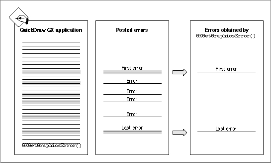

Legacy Document
Important: The information in this document is obsolete and should not be used for new development.
Important: The information in this document is obsolete and should not be used for new development.


Obtaining Errors, Warnings, and Notices
You can use theGXGetGraphicsError,GXGetGraphicsWarning, andGXGetGraphicsNoticefunctions to obtain QuickDraw GX error, warning, and notice messages describing problems that occur during the execution of your application. These three functions return the last problem encountered during execution. If no problem has been posted, the function returns 0 until a problem message is posted.The
stickyError,stickyWarning, orstickyNoticeparameters of the respective function, if notnil, are pointers to the first execution problem that QuickDraw GX encountered after the last time that theGXGetGraphicsError,GXGetGraphicsWarning, orGXGetGraphicsNoticefunction was called. These functions thereby allow you to determine both the original problem and the final problem that was detected by QuickDraw GX during execution of your application.
Figure 3-2 shows the use of these polling functions to obtain the errors, warnings, and notices of selected blocks of your code.
- Note
- Notices are posted only in the debugging version of QuickDraw GX.

Figure 3-2 Polling for errors, warnings, and notices
Figure 3-3 shows the use of the
GXGetGraphicsErrorfunction to obtain the first and last errors posted when you test your QuickDraw GX application.Figure 3-3 Obtaining the first and last posted QuickDraw GX error

Listing 3-1 shows the use of the
GXGetGraphicsErrorfunction to obtain the first error posted after the execution of a block of code.Listing 3-1 Obtaining the first posted error
static void ObtainOriginalError(void) { /* block of application code */ /* If an error occurred, then see if the orginal error was out_of_memory. Note that you need to look at the original error, not the last error returned, since if the NewLine fails, then the next two functions (DrawShape and DisposeShape) will generate a shape_is_nil error. */ { graphicsError myError, originalError; if( myError = GetGraphicsError(&originalError) ) { if( originalError == out_of_memory ) { /* post out of memory dialog box */ } else { /* post generic error dialog box */ } } } }Listing 3-2 shows the use of theGXGetGraphicsWarningfunction to obtain the first and last warning posted after the execution of a block of code.Listing 3-2 Obtaining the first and last QuickDraw GX warning
static void ObtainFirstLastWarning(void) { /* block of application code */ /* It might be valuable to look at both myWarning (last warning posted) and originalWarning (first warning posted), although the last warning is usually the most important warning posted. */ { graphicsWarning myWarning, originalWarning; if( myWarning = GXGetGraphicsWarning(&originalWarning) ) { DebugStr("\pa warning occurred"); } } }Listing 3-3 shows the use of theGXGetGraphicsNoticefunction to obtain the first and last notices posted after the execution of a block of code.Listing 3-3 Obtaining the first and last posted notices
static void ObtainFirstLastNotice(void) { /* block of application code */ /* It might be useful to look at both myNotice (last notice posted)and originalNotice (first notice posted), although the last notice is usually the most important notice posted. */ { graphicsNotice myNotice, originalNotice; if( myNotice = GXGetGraphicsNotice(&originalNotice) ) { DebugStr("\pa notice occurred"); } } }TheGXGetGraphicsErrorfunction is described on page 3-54. The QuickDraw GX errors that may be posted are listed in the section "Errors" beginning on page 3-6. QuickDraw GX allows you to ignore warnings and notices, but does not provide a function that will ignore errors.The
GXGetGraphicsWarningfunction is described on page 3-58. The QuickDraw GX warnings that may be posted are listed in the section "Warnings" beginning on page 3-10. QuickDraw GX allows you to ignore warnings that would otherwise be posted. How to ignore warnings is discussed in the section "Ignoring Warnings and Notices" beginning on page 3-36. TheGXIgnoreGraphicsWarningfunction is discussed on page 3-62.The
GXGetGraphicsNoticefunction is described on page 3-64. The QuickDraw GX notices that may be posted are listed in the section "Notices" beginning on page 3-27. QuickDraw GX allows you to ignore notices that would otherwise be posted. How to ignore notices is discussed in the section "Ignoring Warnings and Notices" beginning on page 3-36. TheGXIgnoreGraphicsNoticefunction is discussed on page 3-68.
- Note
- An alternative or complementary approach to the use of the
GXGetGraphicsError,GXGetGraphicsWarning, andGXGetGraphicsNoticefunctions is to include an application-defined error, warning, or notice handler. This topic is discussed in the section "Installing an Error, Warning, or Notice Handler" beginning on page 3-38.